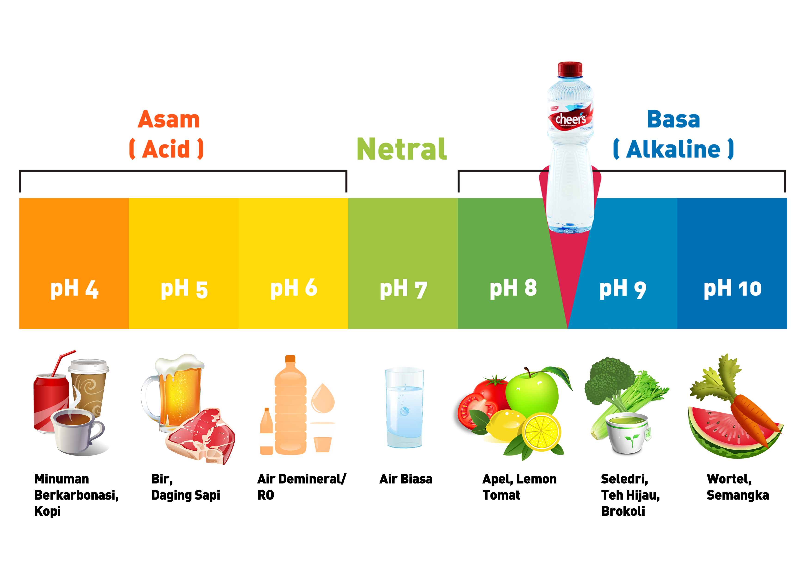
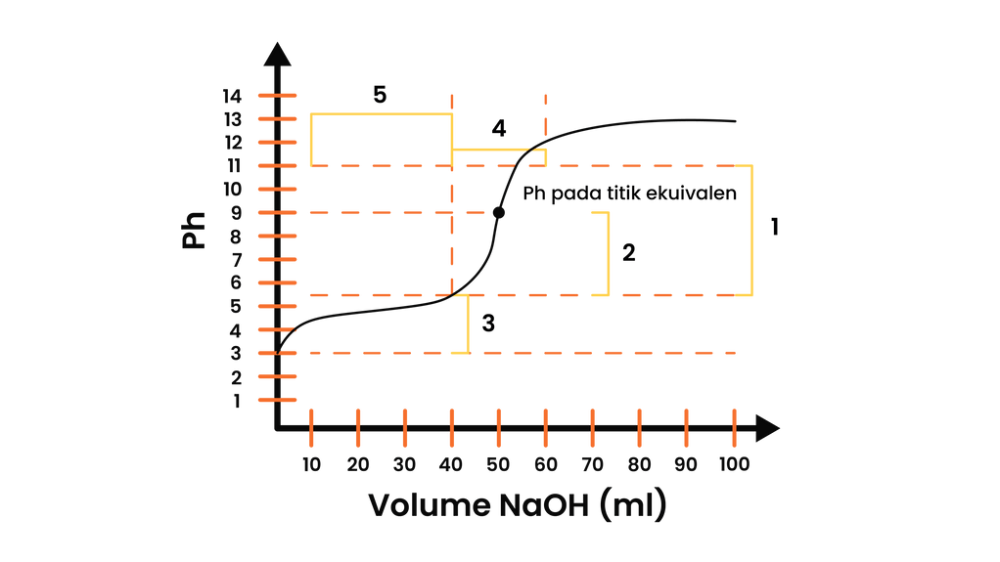
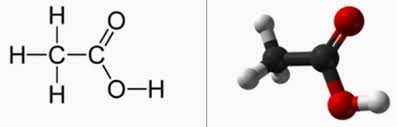
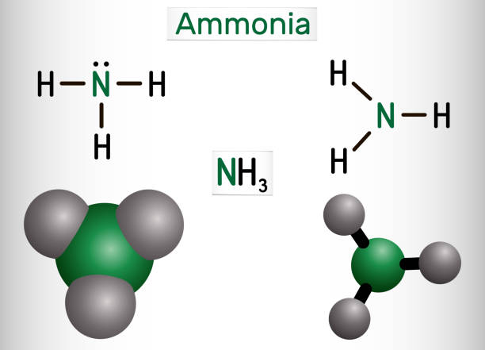
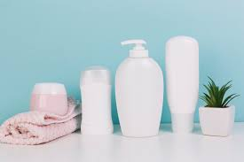
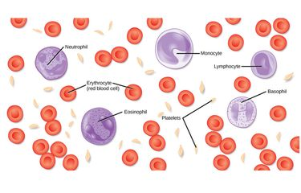

Materi Pembelajaran
Pelajari konsep larutan penyangga secara bertahap
Tubuh manusia tidak bisa menerima pH yang tiba-tiba naik atau turun drastis akibat larutan asam atau basa. Hal ini berbahaya bagi tubuh bahkan bisa menyebabkan kematian.

Peran larutan penyangga adalah untuk mempertahankan dan menjaga keseimbangan pH tersebut.
Larutan penyangga adalah larutan yang pH-nya relatif tetap dan tidak berubah secara signifikan meskipun ditambahkan sedikit asam kuat, basa kuat, atau diencerkan.

1. Larutan Penyangga Asam
Terdiri dari asam lemah dan basa konjugatnya.

2. Larutan Penyangga Basa
Terdiri dari basa lemah dan asam konjugatnya.

Larutan penyangga mengandung komponen yang dapat bereaksi dengan penambahan asam (H⁺) maupun basa (OH⁻).

Reaksi dengan Asam (H⁺):
CH₃COO⁻ + H⁺ → CH₃COOH
Reaksi dengan Basa (OH⁻):
CH₃COOH + OH⁻ → CH₃COO⁻ + H₂O
pH = pKa + log ([A⁻]/[HA])


Produk Harian (Shampo)
Menjaga pH shampo di rentang 4,5 - 6,0 agar sesuai dengan pH kulit kepala.

Dalam Darah Manusia
Mengandung sistem penyangga karbonat, hemoglobin, dan fosfat.
Larutan buffer dibuat dari 100 mL CH₃COOH 0.1 M dan 100 mL CH₃COONa 0.1 M. Jika Ka CH₃COOH = 1.8 x 10-5, hitung pH larutan!
1. Hitung pKa:
pKa = -log(1.8 x 10⁻⁵) = 4.742. Perbandingan konsentrasi:
[A⁻]/[HA] = 0.1/0.1 = 13. Hitung pH:
pH = 4.74 + log(1) = 4.74